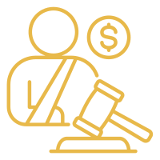

Torts & Compensation legal services in Saudi Arabia.
Afdal Mohami's Torts & Compensation practice offers legal services to obtain fair compensation for bodily, material, and moral damages in Saudi Arabia, from traffic accidents to medical malpractice and diyah/arsh claims.
When another party causes you harm, whether physical, material, or moral, you're statutorily entitled to claim fair compensation. This practice area covers every type of compensation claim an individual or company can pursue under the Saudi system.
We offer traffic accidents and compensation for those harmed in road accidents, and personal bodily injury compensation for any injury resulting from another party's negligence. We also help with material and moral damages claims, and diyah (blood money) and arsh in cases governed by Sharia, in addition to medical malpractice compensation.
This practice area serves traffic accident victims needing compensation for damages and treatment, those injured due to another party's negligence in any situation, families of medical malpractice victims seeking fair compensation, and those who suffered moral or material harm from another party's actions.
Contact starts with a brief description of the incident or harm you suffered, followed by an assessment from a lawyer specializing in compensation cases, then a plan defining the expected compensation value and the right path to claim it. We make a point of precisely documenting every detail of the harm to ensure maximum possible compensation.
Recurring scenarios include a person injured in a traffic accident due to the other party's negligence needing compensation for treatment and damages, or a patient who suffered a medical error needing fair compensation for the resulting harm. Another common scenario: a person who suffered moral harm from defamation or abuse needing an assessment of the compensation owed.
We combine practical experience in assessing fair compensation values with precise knowledge of Sharia-based diyah and arsh systems, backed by a commitment to claiming the maximum compensation the client is actually owed.
A simple compensation claim with a cooperative insurance company may be resolved within a few weeks through direct correspondence, while serious medical malpractice cases and complex death accidents need extended representation involving medical experts and precise compensation estimates. We clarify the expected effort as soon as we assess your incident details.
Any compensation case benefits from having the initial medical report and the accident or police report if available, and any documented treatment invoices or material damages. In traffic accident cases, the traffic report particularly helps determine fault percentage and build the claim precisely.
We combine practical experience negotiating with insurance companies and precise understanding of Sharia diyah and arsh amounts, with a clear commitment not to accept any settlement below the client's actual right without their full understanding of the decision's circumstances and its effect on their final compensation.
A common question: can additional compensation be claimed if the insurance company refuses to cover full damages? Yes, and we help you claim the difference directly from the at-fault party or through insurance dispute committees. Another question: is diyah calculated the same amount in all death cases? No, the amount varies by the type and circumstances of the incident, and we clarify the precise calculation for your case.
We often offer a fee structure linked to a percentage of compensation collected in major compensation cases, ensuring our interest aligns with yours in achieving the highest possible compensation.
Among the most common mistakes: accepting the first compensation offer from the insurance company without independent assessment of actual damage scale, often meaning accepting an amount far below the actual right. Another mistake: delaying medical documentation of the injury immediately after the incident, later weakening evidence supporting the claim. We always recommend immediate documentation and independent assessment before accepting any settlement offer.
We commit to never accepting any settlement on the client's behalf without their full, informed consent, and always explain to them the difference between the offered amount and their actual precisely-estimated right.
Many affected parties residing outside the Kingdom ask: can a compensation claim for an incident in Saudi Arabia be pursued without attending in person? Yes, through an electronic power of attorney through which we handle the entire claim process before the insurance company or competent court until you receive your full due compensation.
We always recommend obtaining an independent assessment of actual damage scale before negotiating with the insurance company or at-fault party, as initial assessments offered by insurance companies are often below a fair estimate, and we help you build a precise assessment file reflecting the real damage in all its details.
Some serious incidents produce multiple types of damage simultaneously: physical, material, moral, and even future lost earnings. We help you document and assess each type of this damage separately and precisely, ensuring the final claim reflects the full extent of the damage you suffered.
In traffic accidents and physical injuries, documenting the accident scene immediately with photos and video is critical to building a strong compensation file later. We always recommend this immediate documentation before anything else, as direct visual evidence is far stronger than any later verbal description of the incident.
When the party causing damage is a government entity or semi-government establishment, procedures and the competent judicial authority differ from ordinary compensation cases between individuals. We handle this special type of case with precise understanding of the correct required procedural route.
It depends on the injury severity, material damages, and each party's degree of liability, and we help you document all these elements to ensure fair compensation.
Diyah is compensation for death or major injuries defined by Sharia, while arsh is compensation for smaller injuries whose value isn't defined by Sharia; we explain the details based on your situation.
Yes, you can claim compensation for moral harm like defamation or abuse even without direct material harm.
It depends on the medical case's complexity and the need for specialized medical reports, and we give you a realistic estimate after reviewing your situation's details.
The initial consultation is always free; the cost of full representation is set transparently after understanding your harm's details.
Reach a licensed lawyer within minutes on WhatsApp — in any city in the Kingdom.
Start your consultation